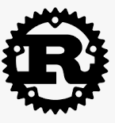
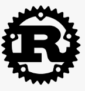
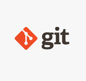
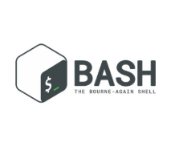
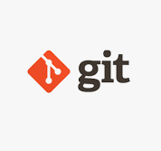
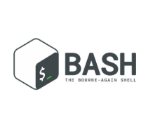

Experiências

📢 Adquirir experiência é aprender na prática, desenvolvendo habilidades, enfrentando desafios e evoluindo com cada vivência 📢
◀ Positivo S+
Analista de suporte bilingue 🗓️ Abril 2025 - Julho 2025
🎯 Faziamos a ponte de suporte back end para clientes bancários PJ lidava com assuntos relacionados a problemas de acesso a aplicações, cadastros, reuniões instrutivas à assuntos solicitados pelos clientes.
🎯 As tratativas eram realizadas seguindo correntes de e-mail se guindo os CRMs gerados através do Dynamics.
◀ Tech Mahindra
Analista de atendimento 🗓️ Agosto 2024 - Fevereiro 2025
🎯 Por meio do sistema ERP, foram realizadas correções em produtos, embalagens, emissão de notas fiscais e faturamento.
🎯 As análises foram conduzidas utilizando as ferramentas Swagger e Postman para obter as informações necessárias da API nos formatos HTTP, XML e JSON.
◀ NTT DATA
PTN1 Analista de suporte BPO Jr. 🗓️ Abril 2023 - Junho 2024
🎯 Abertura de tickets na plataforma Movidesk para atendimento ao cliente, relacionados a erros, dúvidas ou solicitações de serviço.
🎯 Por meio do sistema ERP, eram realizadas correções em produtos, embalagens, emissão de notas fiscais e faturamento.
🎯 No ServiceNow, recebíamos detalhes sobre problemas que exigiam resolução ou solicitações de acesso e/ou redefinição de senha para aplicações como WMS, Egates, Logan e PPMS.
◀ TCS - Tata Consultancy Services
Analista de TI Jr. 🗓️ Agosto 2021 - Agosto 2022
🎯 Utilizei a plataforma ServiceNow para gerenciar os chamados atribuídos à minha equipe, relacionados à resolução de problemas nos sistemas GPV-F (ferrovia), GPV-M (mineração) e GPV-P (portos).
🎯 Quando necessário, inseria códigos XML nas aplicações para corrigir processos de automação dentro do Control-M.
🎯 No grupo de operações ferroviárias, utilizava o Control-M para monitorar e identificar falhas nas tarefas automatizadas diárias.
◀ Capgemini
Técnico de Service Desk bilingue 🗓️ Outubro 2018 - Abril 2021
🎯 Atuei como Técnico de Service Desk, sendo responsável por identificar e solucionar problemas enfrentados pelos usuários da rede. Realizava atendimentos diretos ou criava chamados no ServiceNow para encaminhar os casos à equipe de TI apropriada.
🎯 Utilizava o Active Directory para atender solicitações de acesso e gerenciar instalações de aplicativos via Software Center, garantindo conformidade com a LGPD.
🎯 Além disso, realizava configurações de VPN quando os usuários enfrentavam dificuldades de acesso.
Experiências autônomas
◀ Web developer
Desenvolvedor Web com sólida experiência em criação e manutenção de aplicações responsivas e escaláveis. Ao longo da carreira, adquiri competências em front-end e back-end, atuando com tecnologias como HTML5, CSS3, JavaScript, React, Node.js,PHP e mais outras estão na aba de Hard Skills. Tenho histórico comprovado de:
📈 Melhoria de desempenho: Redução de bugs em até 20% por meio de testes unitários e correções precisas.
🎯 Foco em usabilidade: Colaboração com designers para aprimorar UX/UI, aumentando a satisfação do usuário em 30%.
🔧 Manutenção e evolução de sistemas: Implementação de novas funcionalidades e otimização de código, reduzindo o tempo de carregamento em até 25%.
📊 Documentação e versionamento: Uso de Git e metodologias ágeis (Scrum) para garantir entregas organizadas e eficientes.
🤝 Trabalho em equipe: Participação ativa em squads multidisciplinares, contribuindo para soluções inovadoras e alinhadas aos objetivos do cliente.
◀ Mozilla Builder
Correção de BUGs em aplicações Mozilla através do Bugzilla que é uma ferramenta de rastreamento de bugs desenvolvida pela Mozilla Foundation.
Ela é usada para reportar, acompanhar e corrigir falhas em softwares como Firefox, Thunderbird e outros projetos Mozilla.
É amplamente adotada por diversas organizações para gerenciar problemas técnicos e melhorias.
◀ GNU Developer
Linguagens utilizadas:
 


 



Contribuir para o desenvolvimento de software livre dentro do projeto GNU, criado pela Free Software Foundation. Seu papel envolve:
- Desenvolver e manter pacotes GNU: Criar, corrigir e melhorar softwares que seguem os princípios do software livre.
- Seguir os padrões de codificação GNU: Isso garante consistência, legibilidade e compatibilidade entre os diversos pacotes.
- Usar ferramentas como Savannah: É o servidor oficial de hospedagem de código-fonte para projetos GNU, onde os desenvolvedores gerenciam repositórios, páginas web e listas de discussão.
- Colaborar com a comunidade: Participar de listas de e-mail, fóruns e grupos de discussão para resolver bugs, propor melhorias e revisar código.
- Promover o software livre: Além da parte técnica, há um compromisso ideológico com a liberdade de uso, modificação e distribuição do software.